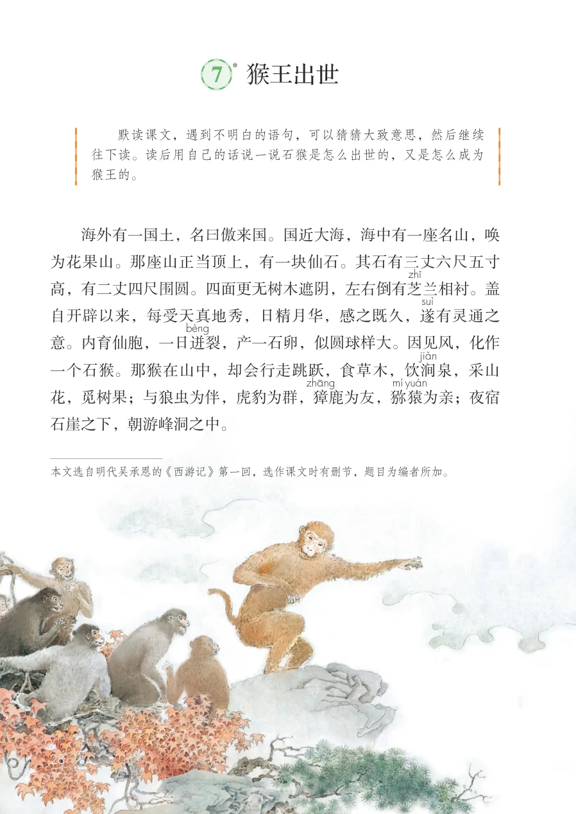
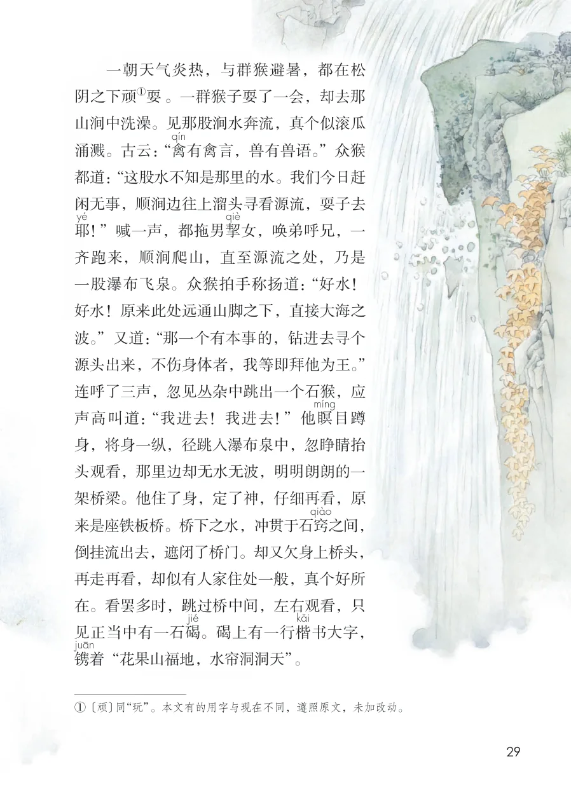
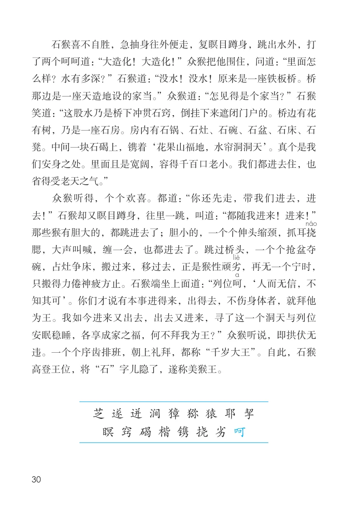

展开章节菜单
7 猴王出世
*
海外有一国土，名曰傲来国。国近大海，海中有一座名山，唤为花果山。那座山正当顶上，有一块仙石。其石有三丈六尺五寸高，有二丈四尺围圆。四面更无树木遮阴，左右倒有芝
兰相衬。盖自开辟以来，每受天真地秀，日精月华，感之既久，遂意。内育仙胞，一日迸
裂，产一石卵，似圆球样大。因见风，化作一个石猴。那猴在山中，却会行走跳跃，食草木，饮涧
泉，采山花，觅树果；与狼虫为伴，虎豹为群，獐
鹿为友，猕
为亲；夜宿石崖之下，朝游峰洞之中。
查看教材原页（保留全部图片、注音与原始排版）

一朝天气炎热，与群猴避暑，都在松
阴之下顽
山涧中洗澡。见那股涧水奔流，真个似滚瓜
涌溅。古云：“禽
有禽言，兽有兽语。”众猴
都道：“这股水不知是那里的水。我们今日赶
闲无事，顺涧边往上溜头寻看源流，耍子去
耶
！”喊一声，都拖男挈
女，唤弟呼兄，一
齐跑来，顺涧爬山，直至源流之处，乃是
一股瀑布飞泉。众猴拍手称扬道：“好水！
好水！原来此处远通山脚之下，直接大海之
波。”又道：“那一个有本事的，钻进去寻个
源头出来，不伤身体者，我等即拜他为王。”
连呼了三声，忽见丛杂中跳出一个石猴，应
声高叫道：“我进去！我进去！”他瞑
身，将身一纵，径跳入瀑布泉中，忽睁睛抬
头观看，那里边却无水无波，明明朗朗的一
架桥梁。他住了身，定了神，仔细再看，原
来是座铁板桥。桥下之水，冲贯于石窍
之间，
倒挂流出去，遮闭了桥门。却又欠身上桥头，
再走再看，却似有人家住处一般，真个好所
在。看罢多时，跳过桥中间，左右观看，只
。碣上有一行楷
书大字，
着“花果山福地，水帘洞洞天”。
查看教材原页（保留全部图片、注音与原始排版）

石猴喜不自胜，急抽身往外便走，复瞑目蹲身，跳出水外，打了两个呵呵道：“大造化！大造化！”众猴把他围住，问道：“里面怎么样？水有多深？”石猴道：“没水！没水！原来是一座铁板桥。桥那边是一座天造地设的家当。”众猴道：“怎见得是个家当？”石猴笑道：“这股水乃是桥下冲贯石窍，倒挂下来遮闭门户的。桥边有花有树，乃是一座石房。房内有石锅、石灶、石碗、石盆、石床、石凳。中间一块石碣上，镌着‘花果山福地，水帘洞洞天’。真个是我们安身之处。里面且是宽阔，容得千百口老小。我们都进去住，也省得受老天之气。”众猴听得，个个欢喜。都道：“你还先走，带我们进去，进去！”石猴却又瞑目蹲身，往里一跳，叫道：“都随我进来！进来！”那些猴有胆大的，都跳进去了；胆小的，一个个伸头缩颈，抓耳挠腮，大声叫喊，缠一会，也都进去了。跳过桥头，一个个抢盆夺碗，占灶争床，搬过来，移过去，正是猴性顽劣
，再无一个宁时，只搬得力倦神疲方止。石猴端坐上面道：“列位呵
，‘人而无信，不知其可’。你们才说有本事进得来，出得去，不伤身体者，就拜他为王。我如今进来又出去，出去又进来，寻了这一个洞天与列位安眠稳睡，各享成家之福，何不拜我为王？”众猴听说，即拱伏无违。一个个序齿排班，朝上礼拜，都称“千岁大王”。自此，石猴高登王位，将“石”字儿隐了，遂称美猴王。
查看教材原页（保留全部图片、注音与原始排版）
